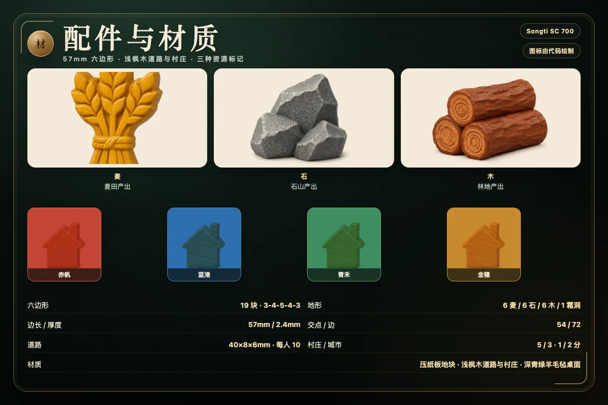

一、盘面与配件
棋盘由 19 个尖顶六边形按 3、4、5、4、3 排成菱形岛，共 54 个交点、72 条边。地块只有三种产出：麦田产麦、石山产石、林地产木。全岛固定为 6 块麦田、6 块石山、6 块林地，再加 1 块不产出的霜洞；霜洞放在岛中央，不参与掷骰产出。
18 块产出地各放一个点数标记，取值为 2 到 12 且不含 7：2 和 12 各一个，3、4、5、6、8、9、10、11 各两个。6 和 8 最强，各有 5 种骰子组合；2 和 12 最弱，各有 1 种。生成规则会避免两个 6/8 相邻，让高点数尽量分散。骰子和为 7 时不产资源，具体见第六节。
岛的四条海岸边上各有一座潮门，不产资源，也不放点数。潮门本身不是建筑：只要你的一座村庄或城市占住潮门这条边的任意一个端点，你的兑换比例就从 3:1 降为 2:1。四位玩家可以争夺不同的潮门，但村庄不能相邻，所以同一条潮门边通常只会被一方占住。
每人有 5 座村庄、3 座城市和 10 条道路的备用件。2–4 人可玩；单人模式下你执一方，其余座位由 AI 操作，AI 分随机、启发、高手三档，全部只读取公开局面，不偷看骰子流。
二、蛇形开局
开局不掷骰，按蛇形顺序摆放两轮。第一轮从起始玩家开始顺时针，每人放一座村庄，再沿这座村庄选一条空边放一条道路；第二轮从最后一位玩家开始逆序，每人再放一座村庄加一条道路。两人的顺序是「甲、乙、乙、甲」，三人是「甲、乙、丙、丙、乙、甲」，四人是「甲、乙、丙、丁、丁、丙、乙、甲」。
两轮都遵守同样的距离规则：村庄不能落在已有村庄或城市的交点上，也不能与它们相邻——两个建筑之间至少要隔一个空交点。道路必须从刚放下的这座村庄出发，不能悬空。第一轮的村庄只给位置与 1 分，第二轮的村庄在放下时立刻给资源：它相邻的每个产出地块各给 1 份对应资源。霜洞不产出，相邻霜洞没有资源。若第二座村庄同时挨着麦田、石山与林地，就拿到麦 1、石 1、木 1。
摆放结束后，起始玩家先掷骰，进入第一回合。两座村庄已经让每人有 2 分，接下来的 6 分来自新建村庄与城市升级。
三、一个回合做什么
- 掷骰：当前玩家掷两颗六面骰，把点数相加。
- 产出：所有玩家紧邻该点数地块的村庄各拿 3 份资源，城市各拿 5 份；一座建筑同时挨着两块同点数地块时两块都算。霜洞永远不产出。
- 行动：当前玩家可以按资源情况连续建造或兑换，次数不限；完成后结束回合。
掷骰每回合只有一次，掷完才进入行动阶段。行动阶段可以先用潮门兑换，再建造；也可以先铺路，再在新路端点建村庄。每次建造立刻结算分数；若分数达到 8，对局立即结束，不再进行后续回合。行动阶段结束时点「结束回合」，轮到下一位玩家。
本作的产出率是经过校准的：村庄 3、城市 5。三资源与 19 块地图让每次掷骰都可能同时喂到多位玩家，因此 2 人局也能在 6–11 回合内冲到一个可观的分数；4 人局掷骰次数更多，通常 3–7 回合就会有人到 8 分。12 回合是封顶，不是固定长度。
四、建造费用与上限
| 建造 | 费用 | 分数 | 限制与条件 |
|---|---|---|---|
| 道路 | 1 木 + 1 石 | 0 | 接在自己的道路或建筑上，最多 10 条；不能占用已有道路 |
| 村庄 | 1 麦 + 1 石 + 1 木 | +1 | 接自己的道路；与任何村庄/城市至少隔一个空交点；最多 5 座 |
| 城市 | 2 麦 + 3 石 | +2（净 +1） | 只能升级自己的村庄；最多 3 座；升级后村庄名额释放 |
道路不计分，但决定你能否碰到下一个高点数交点。新村庄必须接在自己已有的道路上，不能直接贴到别人的路网；城市则只能在自己的村庄上升级，不能抢占对手的建筑。村庄与城市共享距离规则：任何两座建筑之间至少要隔一个空交点，因此一条边的两端不可能同时属于两位玩家。
理论上限是 5 座村庄 + 3 座城市。由于城市由村庄升级而来，常见终点是 3 城 + 2 村，正好 8 分；如果你建满 5 座村庄再升级 3 座，分数会超过 8，但游戏在第一次达到 8 分时就已经结束。资源不足时，建造按钮会禁用；只要有一项可建，就可以反复建造直到资源用完。
五、潮门与兑换
兑换分两档。没有潮门时，任何人都能在行动阶段用 3 份同一种资源换 1 份另一种资源，本作称「荒野集市」；你的村庄或城市占住某座潮门海岸边的任意一个端点后，比例降为 2:1。一次只能换一种，不能 1 麦 1 石凑成 2 份，也不能把麦换成麦。兑换没有次数上限，但每次都要付足比例。
潮门不产资源，也没有点数，它的价值完全来自兑换效率。2:1 看似只省 1 份，却常常决定城市能否提前一回合落地：手里有 2 麦、2 石、3 木，想付「2 麦 + 3 石」还差 1 石；占住潮门时用 2 木换 1 石，城市立刻升级，分数从 1 变 2。没有潮门就要用 3 木换 1 石，可能要多等一轮产出。
潮门只属于占住端点的玩家。如果对手在你的潮门边建了村庄，只要你们不在相邻交点，双方可以各自使用不同的潮门；同一条潮门边不能同时被两座相邻建筑占住。联机模式里兑换同样由服务器判定，客户端不能伪造比例。
六、掷出 7：简化霜洞
点数和为 7 时，这一轮不产任何资源。本作使用简化霜洞，不设强盗：没有强盗棋子、没有弃半、没有封锁地块，也不会抢走资源。当前玩家直接进入建造与兑换阶段，可以照常建造、兑换或结束回合。
为什么保留 7 的空过？两颗骰子点数和为 7 有 6 种组合，是出现概率最高的结果之一。让 7 停一轮产出，可以给落后方追赶窗口，也避免资源无限堆积；但它不应该再叠加一层惩罚，所以本作去掉了强盗与弃牌。规则页、地图与日志都统一写成「霜洞寂静」，不会假装存在强盗。
七、局面说明
局面一：同一个 8 点，两位玩家同时收
中间那排第 3 格是一块 8 点麦田。你的村庄在它的左上交点，紧邻的还有一块 6 点石山和一块 4 点林地；对手的村庄在右下交点，两个村庄不相邻。掷出 8 时，你和对手各拿 3 份麦；你若已把村庄升级为城市，这次拿 5 份，对手仍是 3 份。掷出 6 时你拿石，对手的村庄不挨着那块石山，拿不到。
局面二：第二座村庄的启动资源
蛇形第二轮，你把第二座村庄放在一个同时挨着 5 点麦田、9 点林地和 10 点石山的交点。放下瞬间你拿到麦 1、木 1、石 1，随后掷骰阶段只要有人掷出 5、9 或 10，你都能继续收资源。第一座村庄只提供位置和 1 分，不提供启动资源；这就是第二座村庄更值钱的原因。
局面三：潮门把余料变成城市
你有 2 麦、2 石、3 木，想升级城市却差 1 块石。村庄占住东侧潮门的一个端点，于是用 2 份木换 1 份石，手里变成 2 麦、3 石、1 木，刚好够付「2 麦 + 3 石」，城市落地，分数从 1 变 2。若没有潮门，就要用 3 份木换 1 块石，晚一回合才能升级。
八、胜利条件与计分
8 分即刻获胜。任何一次建造让分数达到或超过 8，对局立即结束，不再进行后续回合。分数只看建筑：村庄 1 分、城市 2 分，开局的两座村庄也算分。道路、资源存量、潮门数量都不直接计分。
十二回合封顶。没人先到 8 分时，第 12 回合最后一位玩家结束回合后比较分数，最高者胜；最高分并列则并列胜利，不加赛、不比资源。第 12 回合中途有人到 8 分，仍然立即结束。本作没有发展卡、没有最大军、没有最长路加分；最长路只作为高手 AI 评估路网连通性的参考，不写进分数。
分数上限：5 座村庄 + 3 座城市 = 11 分，但 8 分是硬终点。理论上你可以用 3 城 + 2 村达到 8 分，也可以用 5 村 + 1 城达到 7 分再补一座村庄；路线取决于你占到的点数与潮门。
九、三条策略提示
- 先看点数覆盖，再看资源种类。6 和 8 各有 5/36 的概率，2 和 12 只有 1/36。开局优先吃到两三个不同点数，别把两座村庄都堆在同一个 8 点；掷不出来的肥点等于不存在。第二座村庄给资源，把它放在高点数交叉口，比第一座更值钱。
- 把潮门当成分数转换器，不是仓库。2:1 能把多余的木石换成城市缺的那块石，让城市提前一回合落地。判断标准是换完能否立刻加 1 分；只换个形状继续囤就不值得。没有潮门时，3:1 只适合处理真正过剩的资源。
- 按 5 村 3 城的上限倒推路线。常见终点是 3 城 + 2 村，正好 8 分。前期铺 2–3 座村庄占点数，中期把低产村庄升级为城市，后期补最后一座村庄或继续升级。12 回合不长，手里超过 6 份资源还没变成建筑，通常已经在浪费节奏。

十、AI 与联机
单机模式有三档 AI。随机从合法动作中随机选择，用来熟悉流程；启发优先升级城市、再建村庄、再铺路到高价值交点，并只在兑换能立刻完成建造时使用银行或潮门；高手在启发评估上追加潮门收益、最长路连通性与一步局面评估，但同样只能读取公开状态，不修改权威局面、不预知骰子。AI 的每一步都经过与人类相同的合法性校验。
联机房间支持 2–4 座，默认 2 人。房主创建房间后会得到房间号、6 位邀请码和一次性邀请链接；第二至第四位玩家用邀请码或密码加入。开局后空位由 AI 补位；断线 15 秒进入托管，服务器代替该座位行动，重连后交还。骰子在服务器生成，未来随机数不下发；资源、建筑、道路与分数是公开信息，客户端只能看到公开视图。结果写入共享内存榜单，AI 参与者也会入榜，重赛会重开一局并保留座位。
十一、常见问题
- 第二座村庄为什么要立刻给资源？
- 蛇形摆放的第二轮是玩家为整局定调的机会。第二座村庄放下时，按它相邻的每个产出地块各拿 1 份对应资源；第一座村庄不给资源。这样第二轮的选择既有位置价值，也有即时启动资金，避免开局完全靠掷骰。
- 掷出 7 点时会发生什么？
- 本作使用简化霜洞：7 点不产任何资源，也不会触发强盗、弃牌或封锁地块，当前玩家直接进入建造与兑换阶段。霜洞是地图中央那块不产出的地块，不是强盗。
- 为什么没有发展卡和最长路加分？
- 本作把复杂度集中在三资源、潮门与建造路线上，因此不设发展卡、最大军与最长路加分。分数只来自村庄 1 分和城市 2 分；最长路只作为高手 AI 评估连通性的启发式指标，不进入计分。
- 村庄和城市的数量上限是多少？
- 每人最多 5 座村庄、3 座城市、10 条道路。城市由自己的村庄升级而来，升级后村庄名额释放、城市名额占用，分数从 1 分变为 2 分。村庄与城市之间必须至少隔一个空交点，不能相邻。
- 12 回合后同分怎么办？
- 同分即并列胜利，不比较资源数量，也不加赛。若有人在第 12 回合中途先到 8 分，仍然立即结束。若想更快分出胜负，可以约定同分先比城市数，但本站默认按并列处理。
- 2 个人也能玩吗？联机空位怎么办？
- 可以，游戏支持 2–4 人。单机模式下你执一方，其余座位由三档 AI 接管；联机房间开局后空位由同一 AI 引擎补位，断线 15 秒进入托管，重连后交还座位。服务器生成骰子并保存完整状态，客户端只能看到公开资源与建筑。
规则看完了，去岛上试试
无需登录，打开就能开局；支持 2–4 人本地 AI 与联机房间，进度只留在本机。